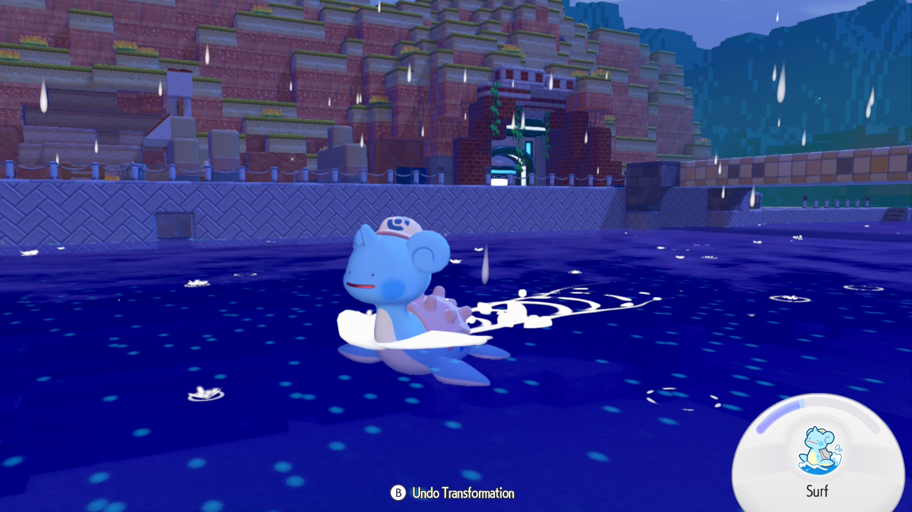
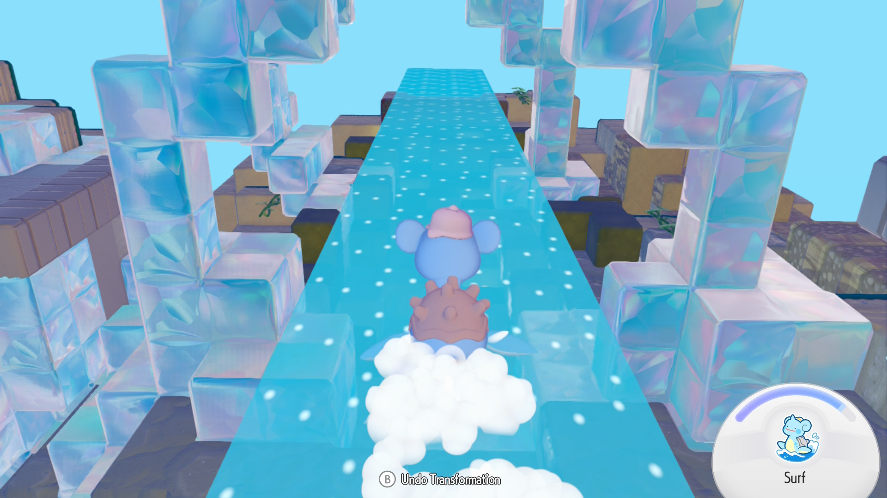
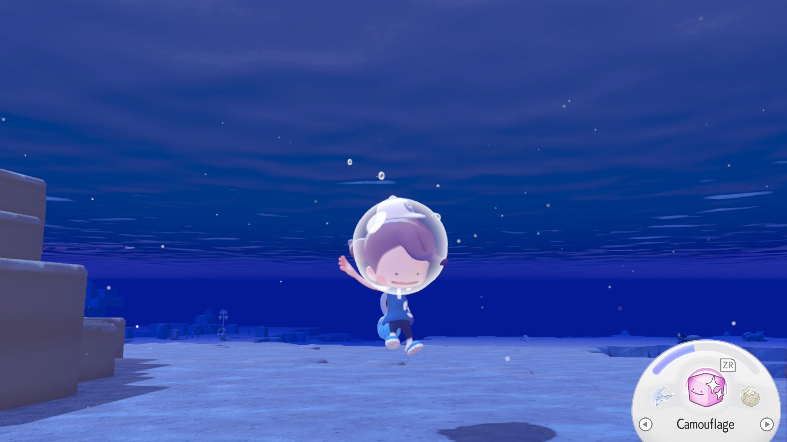
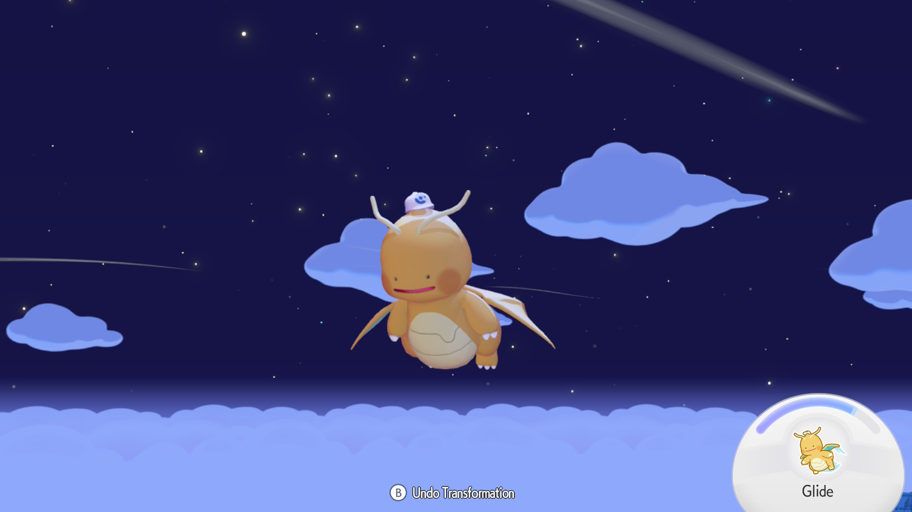

Surf, Dive, and Glide are the three moves in Pokémon Pokopia that don't need to be assigned to your abilities menu. They are important for getting around through the water and air.
What is Surf Used For?
Surf is a move unlocked in the second town, Bleak Beach, in Pokémon Pokopia. It is learned from Lapras
The move can be upgraded if you have the Bubbly Basin DLC by drinking a smoothie.
How To Use Surf


What is Dive Used For?
How To Use Dive

What is Glide Used For?
Glide is a move unlocked in the fourth main story town, Sparkling Skylands, in Pokémon Pokopia. It is learned from Dragonite
How To Use Glide
